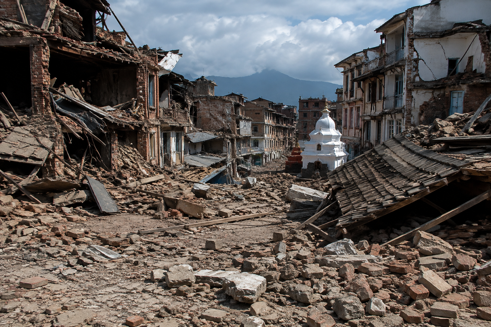
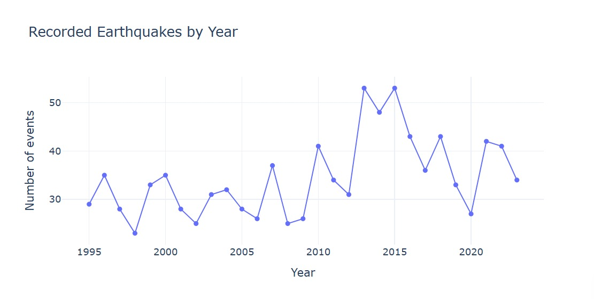

GLOBAL SEISMIC VISUALIZATION
Exploring the
Global Earthquake
Events
Interactive 3D Visualization of Global Seismic Patterns
Explore the spatial distribution, magnitude and concentration of 1,000 significant earthquake events across the globe through an interactive geospatial visualization.
Explore Interactive Globe →STUDENT DETAILS
Bhakti Kamble
M.Sc. Geoinformatics · Semester III
Bharati Vidyapeeth Institute of Environment Education & Research
SCROLL TO EXPLORE ↓
01 · OVERVIEW
Global Earthquake Events
Exploring the Global Earthquake Events is an interactive geospatial visualization of 1,000 significant earthquake events distributed across the world. The project uses geographic coordinates and earthquake magnitude to visualize global seismic patterns on an interactive orthographic globe.
Users can rotate and zoom the globe, inspect individual earthquake locations and compare magnitude patterns across different regions. The visualization highlights concentrations of significant earthquake activity along major tectonically active regions, particularly around the Pacific Ring of Fire.
02 · SUMMARY STATISTICS
Earthquake Dataset at a Glance
Minimum Magnitude6.5Standard Deviation0.44
1st Quartile6.603rd Quartile7.10
Latitude Range−61.85° to 71.63°Longitude Range−179.97° to 179.66°
Geographic ExtentGlobalRecords1,000
03 · INTERACTIVE GLOBE
Explore Earthquakes in 3D
04 · MAGNITUDE ANALYSIS
Understanding Earthquake Magnitude
MAGNITUDE STATISTICS
Minimum6.5
Maximum9.1
Mean6.94
Median6.80
Std. Deviation0.44
Q1 / Q36.60 / 7.10
6.5–6.9Moderate
7.0–7.4Strong
7.5–7.9Major
8.0–8.4Great
8.5–9.1Extreme
Category counts should be read from the embedded analysis; no unsupported counts are fabricated here.
05 · TEMPORAL ANALYSIS
Earthquake Events Through Time

06 · HOTSPOTS
Global Earthquake Hotspots
CONCENTRATION RESULTS
The earthquake events show a non-uniform spatial distribution, with notable concentrations around major tectonically active regions. A prominent concentration is associated with the Pacific Ring of Fire.
07 · INTERPRETATION
What Does the Pattern Tell Us?
Spatial Pattern
The earthquake events show an uneven global distribution, with concentrations around major tectonically active regions.
Magnitude Pattern
The events range from magnitude 6.5 to 9.1, with a mean of 6.94 and median of 6.80.
Regional Pattern
Significant earthquake activity is particularly concentrated around the Pacific Ring of Fire.
Concentration
Spatial clustering demonstrates that significant earthquake events are not uniformly distributed across geographic space.
08 · LIMITATIONS
Limitations of the Analysis
Dataset Limitations
- Based on 1,000 records in the selected dataset.
- Results depend on source data completeness and accuracy.
- Recorded events do not necessarily represent every seismic event worldwide.
Analytical Limitations
- Spatial concentration should not be interpreted directly as earthquake hazard.
- Clustering does not establish causation.
- The visualization identifies patterns but does not predict future earthquakes.
Visualization Limitations
- Interactive visualization is intended for exploration of spatial and statistical patterns.
- Browser/device performance may vary with embedded Plotly content.